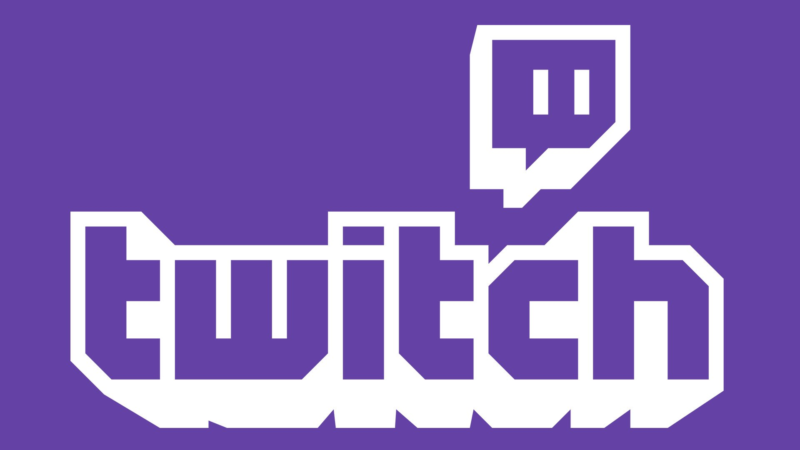
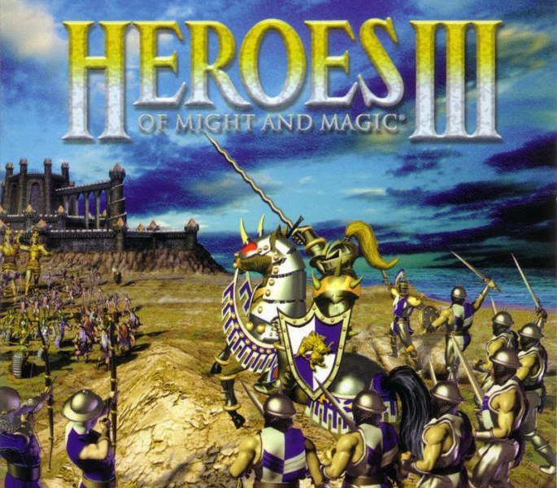

MOONMOON
Moonmoon is one of the best and biggest streamers on the platform. He plays variety of games and proclaims himself to be a "God Gamer." He has a cat Eddie.

Twitch is an online platform that was initially made for gaming, however, now it is a lot more. Talk-shows and IRL streams are very popular.
The game that I watch the most is a strategy called Heroes of Might and Magic 3. Released in 1999, this game still has a pretty big and active community. I used to play it with my dad as a kid and watching and playing it now is very cool and nostalgic.
Moonmoon is one of the best and biggest streamers on the platform. He plays variety of games and proclaims himself to be a "God Gamer." He has a cat Eddie.